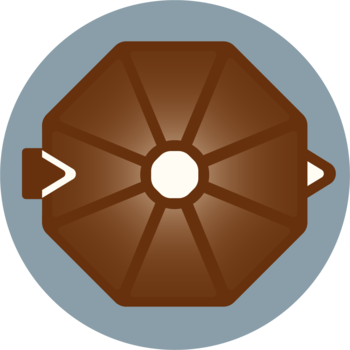

CoffeePotAn Invisible XML processorNorm Tovey WalshCopyright © 2022–2023, 2025 Norm Tovey-WalshVersion 3.3.0Table of ContentsIntroduction1. Installing CoffeePot2. Running CoffeePot2.1. The command line2.2. In build tools3. How it works3.1. Mapping a simple rule3.2. Mapping alternatives3.3. Mapping “x?”3.4. Mapping “x*”3.5. Mapping “x+”3.6. Mapping “x1**x2”3.7. Mapping “x1++x2”3.8. Mapping ¯\_(ツ)_/¯3.9. A word about “-”, “@”, and “^”3.10. Insertions4. Finding errors5. Ambiguity5.1. Describing ambiguity6. Choosing among alternatives6.1. Using a function library6.2. Using XPath expressions7. Configuration8. Output formats8.1. XML8.2. JSON8.3. CSV9. Pragmas10. Parsing recordsA. Property filesA.1. A first attemptA.2. Refining name-valueA.3. More line optionsA.4. Character escapesA.5. Challenges for the reader11. DiagramsPart I. API Documentation12. Parser options12.1. ParserOptions